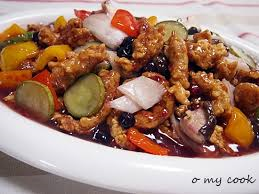

안녕하세요 저는 황현주 입니다.
제가 좋아하는 음식 3가지를 소개 드리겠습니다.
첫번째
오렌지 입니다. 제가 오렌지를 좋아하는 이유는 상큼하고 새콤달콤하기 때문이죠
사진에 있는 오렌지 너무 맛나보이지 않나요?? 싱그러워보이네요
두번째
돈까스 입니다. 저는 돈까스 맛집을 찾아다닐 정도로 정말 돈까스를 좋아하는대요. 제가 특별히 돈까스 맛집을 한 곳 말씀드리겟습니다 그 곳은 바로 성수동에 있는 '하루나'라는 곳입니다. 강추하는 곳이죠 ㅎㅎ

돈까스 사진이 제가 보여드리고 싶은 사진과는 다르네요..이거보다 훨씬 맛있는 비쥬얼과 맛을 가지고 있습니다.
세번째
탕수육 입니다. 저는 튀긴음식을 되게 좋아해요. 어제도 탕수육을 먹었는데 너무 행복했습니다:)
사진보니까 군침이 납니다. 또 먹고 싶네요
지금까지 황현주가 좋아하는 음식에 대해서 소개했습니다.
***보너스로 제가 좋아하는 아이유의 eight 노래도 들어보셨으면 좋겠어요